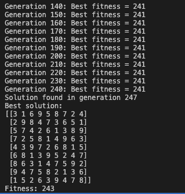
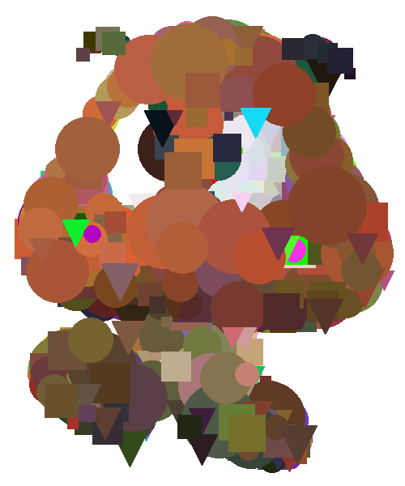

Genetic Algorithms
Genetic Algorithms (GAs) are a fascinating and powerful method of solving optimization problems by mimicking the process of natural selection and evolution. They belong to the family of evolutionary algorithms, which are inspired by Darwin’s theory of evolution. Genetic algorithms are widely used to solve complex problems, including optimization, machine learning, artificial intelligence, and even artistic creation.
What Are Genetic Algorithms?
Genetic Algorithms are heuristic search methods used for solving optimization and search problems. They are particularly effective when the problem space is large, nonlinear, or complex, where traditional approaches might fail or become inefficient.
At their core, genetic algorithms operate by maintaining a population of possible solutions, which evolve over time. Each individual solution, often called a “chromosome,” is evaluated using a fitness function. The better the solution, the higher its chance of being selected for reproduction.
How Do Genetic Algorithms Work?
- Initialization: The algorithm starts with a randomly generated population of possible solutions (chromosomes). These chromosomes are often represented as strings of binary numbers, but they can also be represented in other formats, such as real numbers or characters.
- Selection: The algorithm evaluates each individual in the population using a fitness function, which measures how well the solution solves the given problem. The fittest individuals are selected for reproduction, ensuring that better solutions have a higher chance of passing their traits to the next generation.
- Crossover: Crossover is a process where two parent solutions are combined to produce one or more offspring. By mixing the genes (solution components) of the parents, the algorithm can create new solutions that may have better performance.
- Mutation: To maintain genetic diversity within the population and prevent premature convergence to suboptimal solutions, mutation is introduced. Mutation randomly alters some parts of the chromosome (e.g., flipping bits), introducing new traits that were not present in the parents.
- Termination: The algorithm terminates when the stopping criteria are met, such as reaching a certain number of generations or when the best solution’s fitness reaches a predefined threshold
The Fun
Let’s dive into what I built using genetic algorithms.
- Wordle Solver
Wordle is a word puzzle game where players guess a five-letter word (my prgoram can take in any number of letters). After each guess, feedback is provided: letters that are in the correct position, letters that are part of the word but in the wrong position, and letters that are not in the word at all. The goal is to find the correct word in a limited number of guesses. This program's chromosome is a string of letters where each chromosome represents a possible guess. The mutation operator randomly changes some of the letters in the guess, and the crossover operator combines two parent guesses to create a new guess. The fitness function evaluates the guess based on if the letter is in the word, and if the letter is in the correct spot.
- Sodoku Solver
Sudoku is a 9x9 grid puzzle where the objective is to fill the grid with numbers from 1 to 9 in such a way that each number appears only once in each row, column, and 3x3 sub-grid. This program's chromosome is a 9x9 grid where each cell represents a number in the range [1, 9]. The initial population is generated by randomly filling the grid with valid numbers making sure to include the given values from the puzzle. The fitness function evaluates the solution by counting the number of conflicts in each row, column, and sub-grid. Since each chromosome starts with all the correct numbers (just in the wrong place), the algorithm only needs to move the numbers around to solve the puzzle.

This is what the algorithm looks like when it solves a Sodoku puzzle. - Image Evolution
The most fun program to work on was the image evolution program. Image evolution is a fun application of genetic algorithms where the goal is to evolve an image to match a target image. The initial population is generated by randomly creating images with random colors and shapes. The shapes are circles, rectangles, and triangles. Each chromosome in this program represents an image, and the fitness function evaluates the absoluate value of the difference between RGB values. The crossover in this program simiply copys one of the parent images. The mutation randomly changes one of the shapes in the image.

This is what the algorithm produced after 1000 generations.
Applications of Genetic Algorithms
The programs I built are just a few examples of the many applications of genetic algorithms. GAs have a wide range of applications due to their flexibility and ability to solve complex problems. Some common areas where genetic algorithms are used include:
- Optimization: Finding the best solution for complex optimization problems (e.g., scheduling, route planning).
- Machine Learning: Tuning hyperparameters in neural networks or building feature selection mechanisms.
- Game Playing: Evolving strategies for games such as chess or video games.
- Scientific Research: Solving hard computational biology problems like protein folding or DNA sequence analysis.
Conclusion
Genetic algorithms are a powerful tool for solving complex optimization problems. They are versatile, efficient, and can be applied to a wide range of domains. By mimicking the process of natural selection and evolution, genetic algorithms can find high-quality solutions to problems that are difficult to solve using traditional methods.
I had a lot of fun building these programs and experimenting with different parameters and techniques. The image evolution program, in particular, was a fun project that allowed me to explore the creative side of genetic algorithms. There is still so much more you can do to optimize these programs and make them more efficient, such as implementing elitism, dynamic mutation rates, or parallel processing and changed the fitness function and other parameters.
You can find the code for each of these projects, as well as a program that solves Sodoku using backtracking, on my Gitub here. Thanks for reading and happy coding!
Posted by: Aidan Vidal
Posted on: October 7, 2024